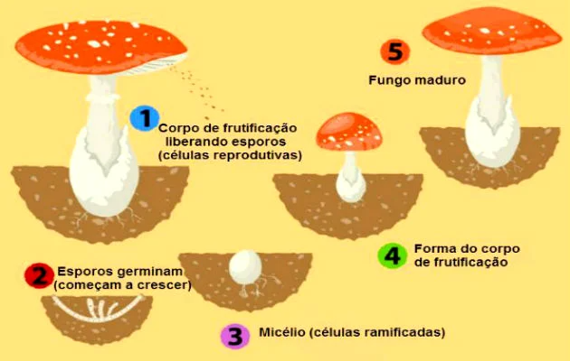

Reino Fungi
Os fungos são organismos eucariontes e heterotróficos. Podem ser uni ou multicelulares, com parede formada predominantemente por quitina, armazenando glicogênio. Em razão dessas duas características e do tipo de nutrição é que, na atualidade, os fungos são considerados, evolutivamente falando, mais aparentados dos animais do que das plantas.
Não formam tecidos, embora os multicelulares apresentem filamentos delgados em sua constituição, denominados hifas. Em conjunto, formam o que chamamos de micélio, que pode se diferenciar em vegetativo, fixando-se ao substrato e fornecendo alimento ao fungo; ou micélio reprodutor, formando esporos. Em alguns casos, também, podem ser desenvolvidos os chamados corpos de frutificação.
Os fungos estão mais presentes no nosso dia a dia do que costumamos imaginar, já que, além de serem muito importantes no que diz respeito à decomposição da matéria orgânica, executam, juntamente com outros organismos, outras funções ecológicas, como é o caso dos liquens e micorrizas. Além disso, são utilizados na fabricação de antibióticos, álcool, bebidas, pães e queijos; podem destruir alimentos e outros produtos, como tecidos e couro; e também causar doenças. Nessa situação, em nossa espécie, não costumam provocar problemas sérios de saúde. Entretanto, caso a pessoa apresente problemas relacionados à imunidade, tais quadros podem ser fatais.